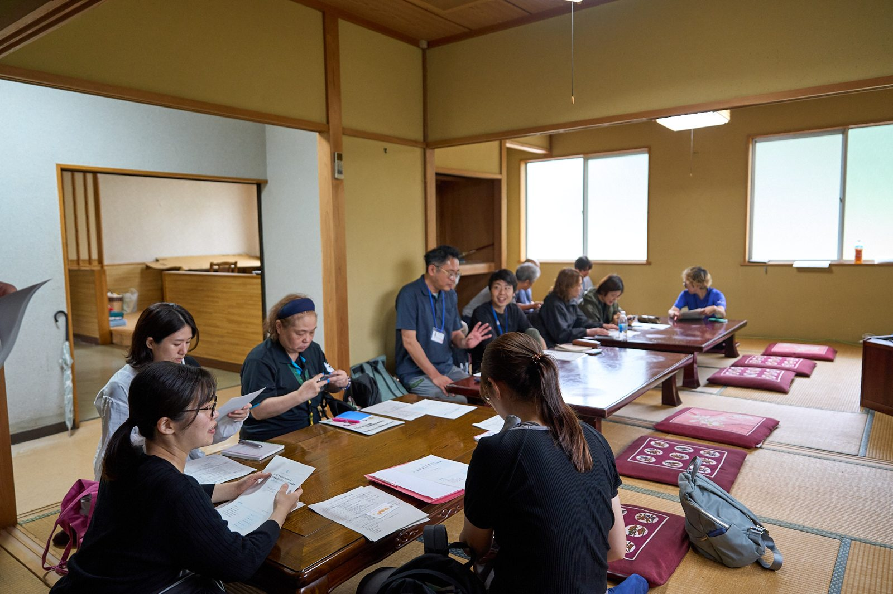
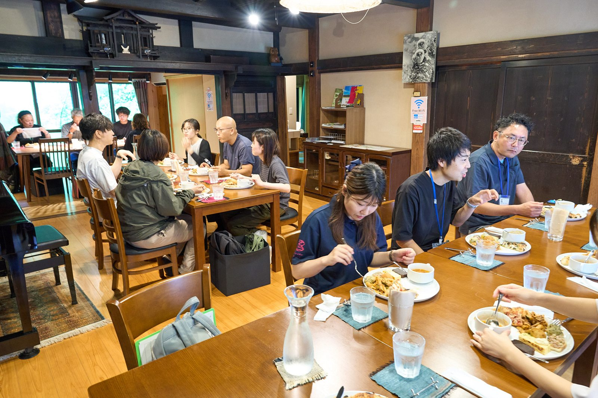
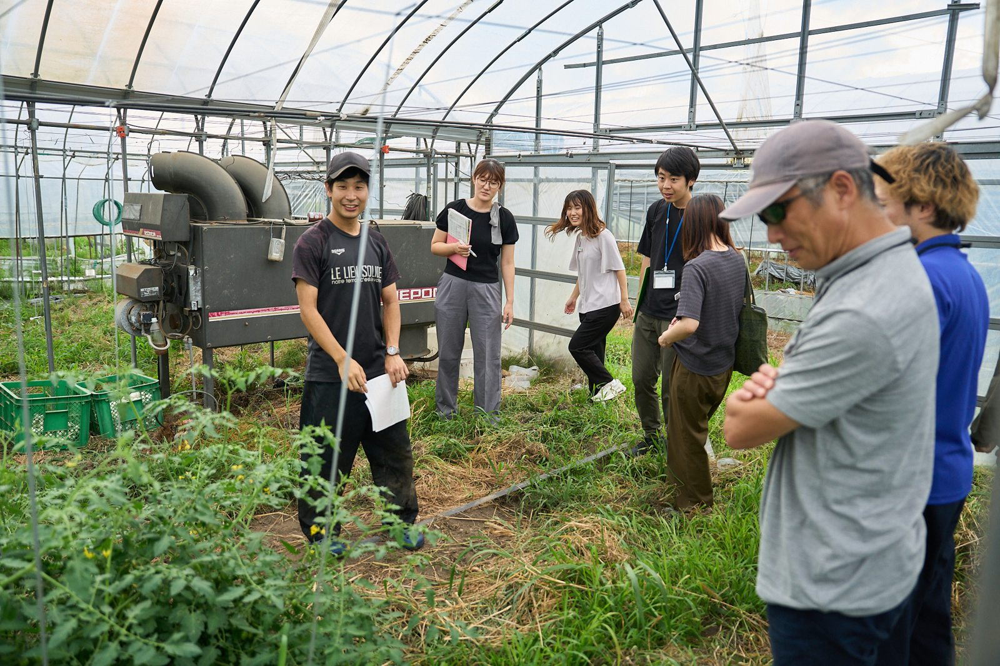
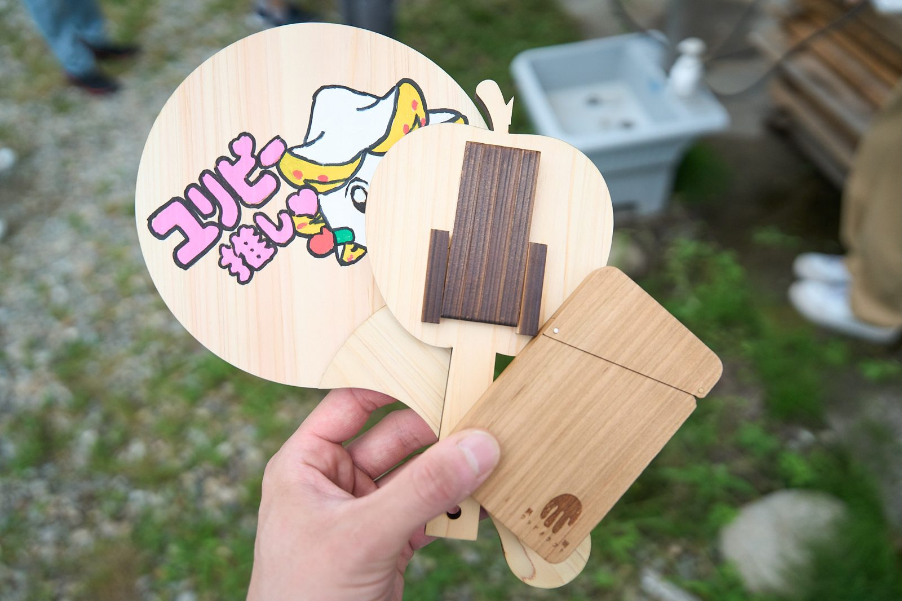

2026年7月13日（月）・14日（火）の2日間、塩谷町と矢板市で「地域おこし協力隊分野別出口戦略研修」を実施しました。地域おこし協力隊員と市町職員を対象に、任期を終えた先輩隊員の仕事や活動の現場を訪ね、自分自身の任期後を考える研修です。
訪問先は、飲食店を営む髙村亮さん、新規就農した鈴木雄太さん、木製品づくりに取り組む室井拓也さん、DXコンサルティング等を行う四十万直人さん。2日間の行程に沿って、それぞれの活動を紹介します。
1日目｜7月13日（月） 塩谷町の活動と、飲食・農業の仕事を訪ねる
塩谷町まちづくりセンター｜隊員を支える地域の取組
最初に訪ねたのは、塩谷町まちづくりセンターです。塩谷町の協力隊担当職員と、中間支援組織の一般社団法人ローカルキャンバス・高塚桂太さんから、町の地域おこし協力隊の活動について紹介を受け、意見交換を行いました。
経験者の仕事を訪ねる前に、隊員が活動する地域と、行政・中間支援組織の関わりを知る時間を設けました。

Pizzeria Gufo｜髙村亮さんの、地域の食材を生かした飲食店
昼食を兼ねて訪ねたのは、塩谷町の協力隊経験者・髙村亮さんが開業した「Pizzeria Gufo（ピッツェリアグーフォ）」です。食事を囲みながら、髙村さんの活動紹介を聞きました。
髙村さんは現役時代、料理人としての経験を生かし、町の農産物を使ったピザづくり体験やイベントでの料理提供に取り組んでいました。食べる楽しさを通して、塩谷町の有機農業や地元の食材を知ってもらう活動です。協力隊時代の活動
現在は古民家を改装した店で、薪窯で焼くナポリピッツァなどを提供しています。ピッツァの小麦粉も栃木県産。地域の食材を味わえるお店を営んでいます。Pizzeria Gufo

ベジタブルストーリー｜鈴木雄太さんの、野菜づくりを仕事にする歩み
午後は、塩谷町の協力隊経験者・鈴木雄太さんの「ベジタブルストーリー」の活動を紹介していただき、農業の現場を見学しました。
鈴木さんは現役時代、有機農業の情報発信を担当し、町の畑を使ったイベントなどに取り組んでいました。任期中の2024年4月には就農し、農園「ベジタブルストーリー」を立ち上げています。協力隊時代の活動
現在も農薬・化学肥料を使わずに野菜を育て、種まきから収穫までの過程も伝えています。農業体験では、野菜を植えたり収穫したりする機会もつくっています。農作物を届けることと、農業に触れる場をつくることの両方に取り組んでいます。ベジタブルストーリー・農業体験の様子

2日目｜7月14日（火） ものづくりと、専門性を生かす仕事を知る
果樹ウッドクラフト｜室井拓也さんの、捨てられる木を製品に変える仕事
2日目は、矢板市の協力隊経験者・室井拓也さんの「果樹ウッドクラフト」を訪ね、木製品づくりの活動を紹介していただきました。
室井さんは現役時代、市内の森林の整備・保全をテーマに活動し、捨てられていた木材を使う木工にも取り組んできました。
現在の工房では、伐採された果樹や建材の端材などを材料に、小さな木工品を一つずつ手作業で製作しています。形が不ぞろいだったり、割れがあったりする木も、その特徴に合った使い道を考え、製品に仕立てています。果樹ウッドクラフト

四十万直人さん｜ITの専門性と、地域でのつながりを生かす
続いて、矢板市の協力隊経験者・四十万直人さんから、DXコンサルティング等の活動を紹介していただきました。
四十万さんは現役時代、ふるさと納税の活性化や地域の交流拠点の運営に携わり、行政と事業者、地域の人たちの間をつなぐ役割を担っていました。
現在は合同会社四拾萬堂の代表として、地域の事業者のデジタル化支援や、地域に関わる事業の企画・運営に取り組んでいます。矢板市の企業を支援する「YAITA DXクルーズ」もその一つです。ITの知識と、地域の人や仕事への理解を生かした支援を行っています。四十万さんの経歴・事業内容
任期後につなぐために、隊員と支える側が考えたいこと
任期後の仕事には、飲食、農業、ものづくり、専門性を生かした支援など、さまざまな形があります。先輩隊員の活動を知るときには、現在の仕事に加えて、任期中にどんな経験や地域との関係を積み重ねてきたのかにも目を向けることが大切だと、私たちは考えています。
隊員にとっては、自分が取り組みたいことと、地域で必要とされていることを重ねながら、任期中に試してみたいことを具体的にする手がかりになります。
市町職員など支える側も、隊員が任期中に挑戦できる場や、相談できる人とのつながりを一緒につくっていくことが大切です。「退任後はどうするのか」という相談を、任期中の小さな実践につなげていく。そのための対話の材料として、経験者の活動を知る機会を生かしていきたいと考えています。